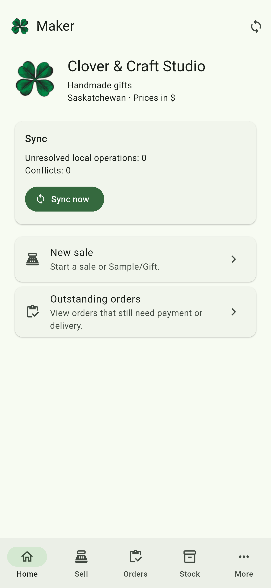
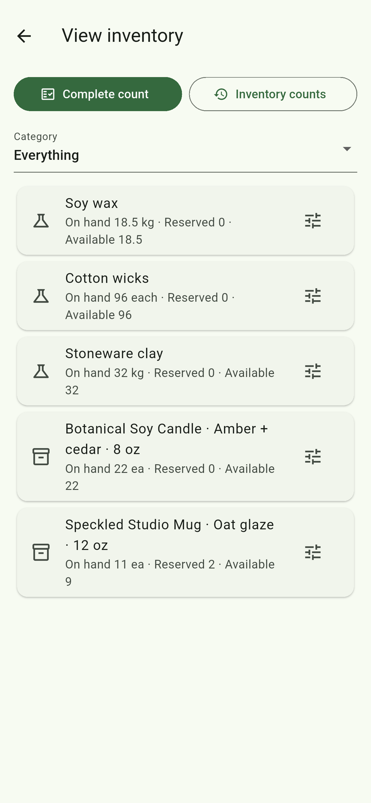
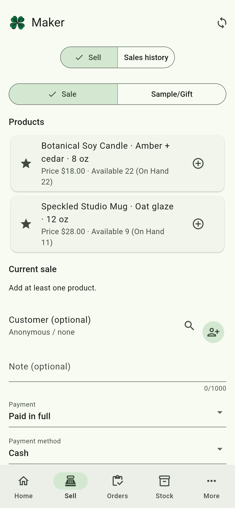
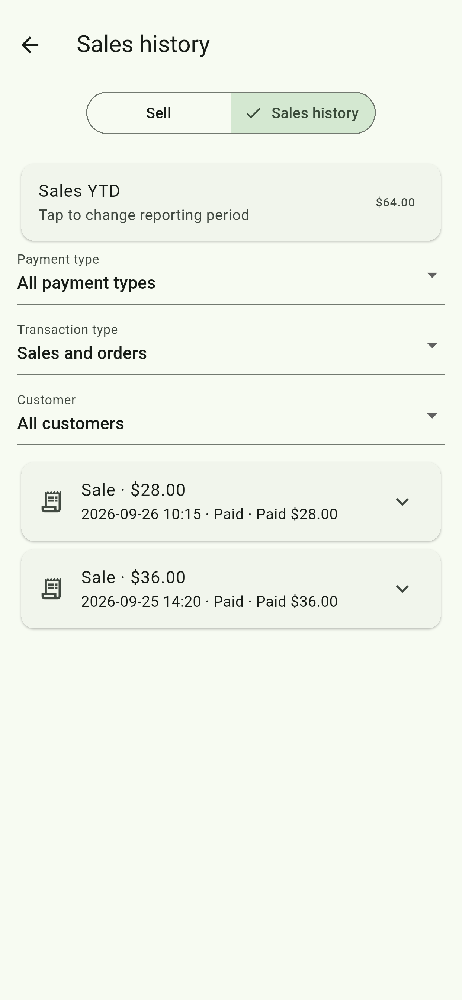

Buy & receive
Record materials, suppliers, quantities, costs and taxes.
 CloverBeeMaker
CloverBeeMaker
Built for small-batch businesses
Inventory • Production • Orders • Sales • Expenses • Taxes
CloverBee Maker connects materials, recipes, production, inventory, orders, customers, payments and expenses so you can see what you have, what is committed, what things cost, what is due, and what the business is doing.
Maker 1.0 on iPhone

The real Maker 1.0 workflow
These are genuine screens from the iPhone release build submitted to Apple—not mockups or concept art.



One workflow, end to end
Record materials, suppliers, quantities, costs and taxes.
Turn materials into finished goods with connected material costing.
See On Hand, Reserved and Available inventory before promising it twice.
Keep orders, delivery, customers and payment status together.
Review costs, expenses, sales and tax records without rebuilding spreadsheets.
Core Maker
Free includes the core workflow. Paid adds team capacity, organization, documentation, reminders and deeper business analysis.
Track what you buy and use. Material cost, Recipe cost and material cost per finished unit are core Free features.
Record what goes into a product and turn those materials into finished inventory with batch history.
Separate physical On Hand stock from Reserved demand and the Available quantity you can still promise.
Track promised dates, partial fulfilment, paid-but-undelivered work and delivered-but-unpaid balances.
Record cash, e-transfer, Square and other payments while keeping payment status separate from delivery status.
See tax collected and tax paid by configured tax type. Maker organizes the records; it does not provide tax advice.
Add your own business logo so the app reflects your brand, not ours. Your logo appears inside Maker alongside your business name, helping the workspace feel like part of your business rather than generic software.
Our Story
A couple of years ago, my wife and I started an apiary. We knew almost nothing about beekeeping, and by the time harvest season came, we realized that keeping the bees alive had been the easy part.
Selling honey, though? That got complicated. We had jars and orders and payments and deliveries. And every night my wife was untangling this long checklist just to figure out tomorrow.
We didn't need expensive software. We just needed something simple. So, I built it. The first version ran on our phones and a computer we had at home. It worked.
Then, friends and customers saw it and said some version of, “Wait, what is that?” We realized we weren't the only ones with this problem.
CloverBee Maker grew out of that moment. It's built for people who make and sell real things without turning a small business into another full-time job.
Need help using it?
A plain-language, screen-by-screen mini-wiki for the app: what each screen is for, what the controls mean, and what to do next.
Open the Maker GuideWondering where that number came from?
See the logic behind material costing, inventory reservations, tax records, shared expenses, labour return and other calculations.
See how Maker worksPayments should feel like part of Maker
Start from a Maker sale or order, send the exact CAD balance to Square Point of Sale, complete the payment in Square, and return to Maker. A validated success is recorded once and the Maker balance updates automatically.
Square remains the payment processor. Maker remains the source of truth for products, inventory, orders, customers and business records.
Square Point of Sale must be installed and configured separately.
Useful at tax time — even on Free
Both plans can track tax collected on sales and tax paid on purchases and expenses by configured tax type. Free keeps the essential totals and business-data export; Paid adds source documents, deeper filters and accountant-oriented exports.
CloverBee Maker organizes business records; it does not determine legal tax eligibility or provide tax or accounting advice.
Free and Paid launch together
Canadian launch pricing. One Maker app, one business account. No ads on Free or Paid.
Free
Everything needed to run a small one-person maker workflow.
Maker Paid
or C$89.99/year
More organization, more insight, less remembering.
| Feature | Free | Maker Paid |
|---|---|---|
| Core business | ||
| Ads | None | None |
| Users / authorized devices | 1 / 1 | Up to 4 / 4 total |
| Cloud file storage | 100 MB | 1 GB |
| Products, variants, materials, Recipes & production | Yes | Yes |
| Inventory, reservations, orders & sales | Yes | Yes |
| Customers & suppliers | Basic records | Records + analysis |
| Offline use & cloud sync | Yes | Yes |
| Square Point of Sale handoff | Included | Included |
| Costing & expenses | ||
| Current material cost | Yes | Yes |
| Recipe / batch material cost | Yes | Yes |
| Material cost per finished unit | Yes | Yes |
| Contribution after materials | Yes | Yes |
| Expense categories | 3 standard | Rename + add up to ~100 |
| Expense subcategories | — | One level |
| Attach supplier invoices / receipts | — | Photo + PDF |
| Product Families | — | Yes |
| Link non-material expenses to products/families | — | Yes |
| Labour time & target hourly rate | — | Yes |
| Effective return per production hour | — | Yes |
| Customers, suppliers & reminders | ||
| Customer purchase history & analysis | — | Yes |
| Supplier purchase/cost history & trends | — | Yes |
| Order reminders | Manual due views | Notifications |
| Delivered-but-unpaid reminders | Manual filter | Weekly default, adjustable |
| Tax, reports & exports | ||
| Tax collected / paid by configured tax type | Yes | Yes |
| Recoverable/claimable tax organization | Yes | Yes |
| Basic sales, expense & operational reporting | Yes | Yes |
| Comparative trend reporting | — | Yes |
| Expense Analysis by category/vendor/date/product | — | Yes |
| Time & Profit / Product Opportunity analysis | — | Yes |
| Fundamental business-data export | Yes | Yes |
| Purpose-specific operational/accountant exports | — | Yes |
Paid adds depth and convenience; Free keeps the underlying business usable. Downgrading does not delete historical business records.
Take the business with you
Maker 1.0 is in Apple App Review. Public availability begins only after approval and Jordon’s manual release. Google Play release remains pending organization publishing setup.
Maker 1.0 is in App Review
Build 7 has been submitted to Apple. Public availability begins after approval, manual release and a final smoke test of the live App Store build.